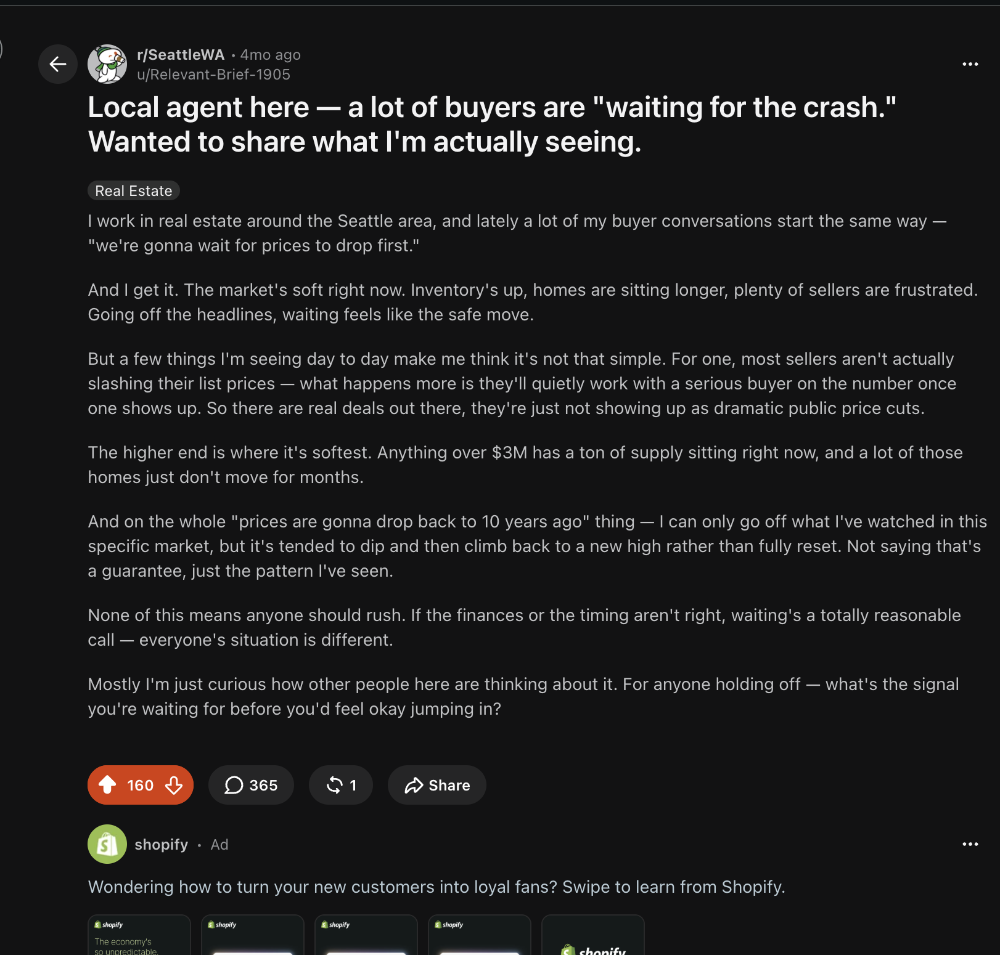

业务问题
房地产决策周期长、地域性强，客户研究分散在多个平台，仅依靠网站难以持续建立可见度和信任。
西雅图房地产客户会通过搜索引擎、本地平台和社区讨论研究市场并筛选经纪人。我围绕客户决策路径，将地域化内容、Google Business Profile、Google Ads、Reddit 和 Yelp 连接起来，持续建立本地可见度、专业可信度和客户信任。
Workflow
房地产决策周期长、地域性强，客户研究分散在多个平台，仅依靠网站难以持续建立可见度和信任。
研究西雅图买家在不同决策阶段使用的平台、搜索词和真实问题。
需要在客户常用的平台持续展示一致的地域经验、市场数据和品牌优势。
围绕真实买家疑虑，联动网站、Google Business Profile、Google Ads、Reddit 和 Yelp。
通过 CRM 验证线索质量，并将 Reddit 真实讨论用于后续内容与广告优化。
结果验证

